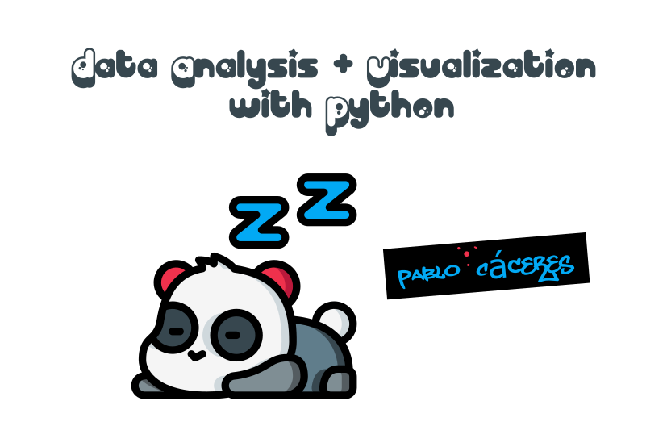

Welcome¶
This is the official site for my book Data Analysis and Visualization with Python

Introduction¶
The one lesson every dance instructor I ever had always agreed on regardless of their style (jazz, contemporary, or classical ballet) was this: technique is a tool to enable artistic expression, not a goal in itself. I have always carried that lesson with me, even a decade after I stopped my dance career. Even to this book.
I could have called this book Python for…(something) or Python Data…(something)*. The reason I decided to call it Data Analysis and Visualization… instead is precisely what I mention above: Python and its libraries are a tool to enable the craft of data analysis and data visualization, not the other way around. I wanted the title to reflect the order of my priorities.
More generally, I believe programming languages are no different than “Grande Jetés” and “Arabesques” for dancers, or stone and chisels for sculptors: tools to enable dancing and sculpture, but not dance and sculpture in itself. True, tools can be beautiful, and the craft of creating new and better tools can be considered an art in itself, yet I hope we can agree that luthier and violinist are different crafts.
I have also said that I consider data analysis and data visualization to be “crafts”. I could have said “the science of” or the “art of”, but chose the word “craft” as I believe is the one that better describes what an expert on data analysis and data visualization is: an artisan. I know, data professionals utilize sophisticated mathematical and computational tools in their work, but that does not justify the denomination of science by itself. Think about it in this way: give the same tools and data to five data analysts, and you will get back five different products, with different structures, charts, and conclusions about the same subject matter. If you think of data analysis as a strictly scientific discipline, this is an odd result. If you think of data analysis as an art, the lack of variability may come as a surprise, as each artist is expected to express their unique artistry in their products. But if you think about it as craftsmanship, the outcome is not odd at all. Give the same tools and wood to five different artisans and ask then for a chair: you will get back five different chairs, but chairs nevertheless. This, I believe, better reflects the true essence of data analysis and data visualization.
What you will learn¶
With this book I am to help you learn:
Fundamental concepts in data analysis and data visualization
How to import, clean, format and transform for data for your analysis with Python
The data analysis workflow (according to me)
Techniques for descriptive statistics
How to utilize the computational tools of the Python ecosystem to enable insight and discovery based on data
Principles of effective data visualization
How to think critically about data representation
How to communicate analysis effectively for a wide variety of audiences
What you will NOT learn¶
Confirmatory data analysis
Cuasal inference
Machine learning
Deep learning
License¶
This book is under the Creative Commons Attribution-NonCommercial-NoDerivs 3.0 License
Physicial copy¶
There is no physicial copy as this is a solo and independent project
============================
Site under constructrion 👷